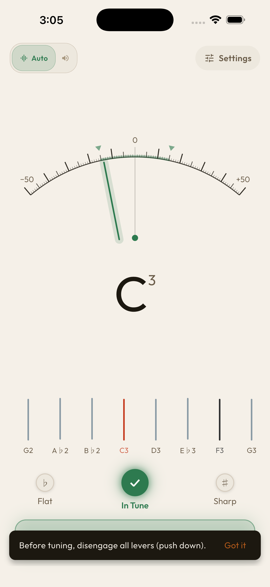
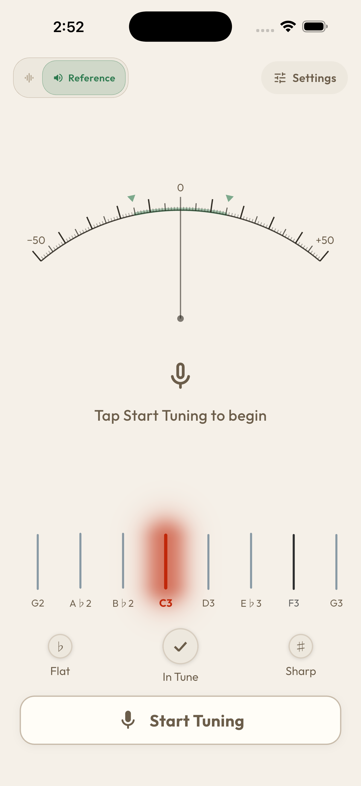
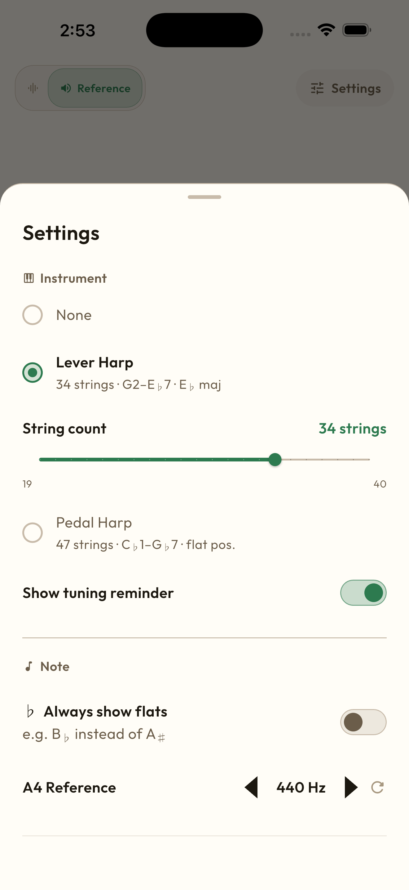
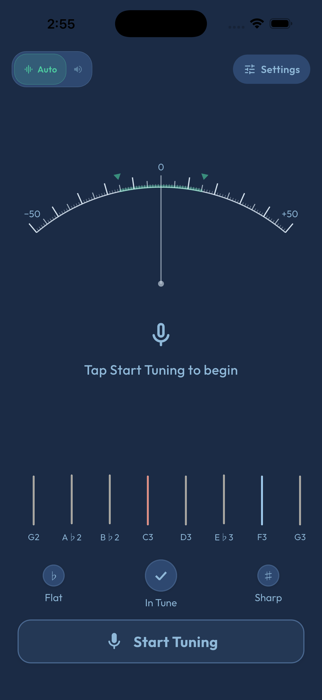

About 關於
Because tuning shouldn't be the hard part 調音不應該是最難的環節
Every other tuner app is built for guitarists. Using one on a harp means scrolling through the wrong strings, reading the wrong notes, and second-guessing yourself. Harpie knows your harp — lever or pedal — so you can just tune and play. 其他所有調音 App 都是為吉他手設計的。Harpie 認識你的豎琴，無論是槓桿豎琴還是踏板豎琴，打開就能調，調完就能彈。
Features 功能
Auto Detection 自動偵測
Just pluck — it knows what to do 撥弦就好，其他交給它
No setup. No list to scroll through. Just pluck a string and the needle tells you exactly where you are. 不需要設定，不需要翻找清單。撥一根弦，指針告訴你現在在哪。

Reference Mode 參考模式
Tap a string — hear it, then tune to it 輕點一根弦，聽它的音，再調準它
Tap any string to hear what it should sound like, then tune to match. Ear and eye, at the same time. 輕點任意一根弦，聽它應該是什麼聲音，再調準。耳朵和眼睛同時並用。

Settings 設定
Dial it in exactly the way you need 完全按照你的需求調整
A4 calibration, flats or sharps, your exact string count — set it once and it stays. Built for teachers, students, and players who know what they need. A4 校準、降號或升號、你的精確弦數，設定一次永久保留。為老師、學生和懂得自己需要什麼的演奏者而設計。

Dark Mode 深色模式
Easy on the eyes in any light 任何光線下都舒適好看
Full dark theme for dim rehearsal rooms and pit orchestras. Switch anytime — your preference is saved. 完整深色主題，適合昏暗排練室與管弦樂坑。隨時切換，偏好自動保留。

Supported Harps 支援的豎琴
Lever Harp 槓桿豎琴
strings (configurable) 弦（可調整）
A♭1 – E♭7Also called Celtic harp. Set your exact string count (19–40) to match your instrument — the layout adjusts automatically. 又稱凱爾特豎琴。設定你的精確弦數（19–40），配置自動調整。
Pedal Harp 踏板豎琴
strings 弦
C♭1 – G♭7Full 47-string concert layout, pedals starting from flat. The way professional players expect it. 完整 47 弦音樂廳配置，踏板從降音開始。專業演奏者期待的方式。